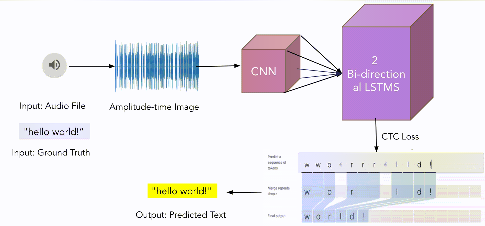

Morse code is a series of dots and dashes representing different text characters, digits and punctuation marks. It is transmitted by on-off keying of an information carrying medium such as electric current, radio waves, visible light or sound waves. In audio form, morse code can be generated via various methods, like tapping (on different materials such as bells, musical instruments, car honks, etc.). Humans can decipher morse code in any given sound source, if they are first trained on a single source. This project's goal is to develop a system which will replicate this "human-like" behavior in deciphering morse code, i.e. the system will be able to decipher the morse code into english text regardless of the sound source used to generate the input.
More specifically, to develop such a morse code recognition system, we will decipher morse code audio into english text, irrespective of the sound source used to generate the morse code
Input: morse code audio .wav
Output: english text corresponding to the inputted morse
Our approach is broken up into two main phases: dataset curation and training. In dataset curation, we pre-recorded audio files of different mediums and along with a text corpus, created a labeled morse code dataset. For training, we trained a C-RNN model with 2 Bi-directional LSTMs and CTC loss.
We used 13 different audio mediums for testing and experimenting throughout our project; you can hear small snippets of 12 of them below (the 13th medium was "beeps" which are regularly used with morse code)
Our first step to formulate our dataset was to take each of these audio waves and create individual "dots" and "dashes" out of them. Below is an example (with the guitar1 medium):
| dot (100 ms) | dash (300 ms) |
|---|
After this, with the help of our text corpus, we formulated sentences using the above dot and dash files. Here's "In the end, we all felt like we ate too much" in morse code!
To replicate a real-world use case, we also created a separate dataset that included 3 types of temporal randomness:
Our best performing model ended up being a C-RNN architecture with CTC loss (Connectionist Temporal Classification), where we first converted our morse audio files into 2d images representing the amplitude vs. time of the wave. However, this took experimentation and iteration to realize this was our best approach. Below, we detail two of our earlier approaches before arriving at our final model.
This model utilizes a CNN - LSTM architecture with 1-D input (being the audio arrays itself), followed by a loss calculation done by categorical cross entropy (or softmax loss). Originally, we had used MSE (or mean-squared error) loss to evaluate this model, however, after some research, we realized that CCE (for our use case) was a much better measure of classification, due to the fact that we have over 50+ classes for our task. In such tasks, as compared to regression, MSE doesn't penalize mis-classifications enough to learn effectively. After over 20+ different experiments, tuning and hyperparameter tuning for this model, we settled on 100 epochs, with a batch size of 16. Our highest run for this model was ~70.28%. Below you can see the training and validation loss curves as well as some sample reconstructions with this method.
Architecturally, we used two 1-D convolution layers, the first with a 16 filter size and the second with 32, respectively, both with kernel size of 3. The first convolution layer is following by a (15, 15) max pooling layer and the second convolution layer is followed by a batch normalization layer and a (12, 12) max pooling layer. Following all this, we have 2 bi-directional LSTM layers, each with 256 units, followed by a dense-softmax activation layer. We settled on an Adam optimizer with a learning rate of 0.0005.
The proposed design and choice of dataset outperformed current design and dataset to recognize morse code from multitude sources of mediums. Our proposed model is trained on 11 different mediums and tested on an unknown medium. We got an character level accuracy of 97%. The existing models in which the dataset was trained only on beeps, when tested on a unseen mediums performed with an character level accuracy of 2 percent. A simple reason for this is when a single medium is given for training, model can easily memorize and overfit the model but at testing time, when something different is encountered, the model fails. Below you can see the loss curves of our proposed model vs. the existing model. Additionally, below that, you can see how our model performed across the various different sound sources. Performance was consistent across almost all, except for horn which might have been due to a lack of other synthetic sound sources being a part of the dataset.
| Proposed Model | Existing Model |
|---|
| Training Loss (all sounds) | Validation Loss (all sounds) |
|---|
Upon evaluation, it was observed that performance of the proposed model depends on the number of sounds sources used to train it. When the model was trained on 3 sound sources, the character accuracy 41.3% which increased to 48.1% with use of 6 mediums and to 76.13% with 9 mediums. As we can see from the plots below, apart from having better accuracy with increasing mediums, we also have faster convergence per epoch. These results clearly indicated the benefits of having more mediums.
| 3 mediums | 6 mediums | 9 mediums |
|---|
Given a human generated morse audio file, it is clear that duration of dots and dash and the timing between them can be a bit off unlike a computer generated morse code. This variabiliy is a must to capture for a robust Morse Code Recognition model. For that purpose, random temporal noise was introduced between dots and dashes and in the length of dots and dashes. The above model was trained with some fine tuning. We were able to achieve an accuracy of 98.37% on a test set of unseen mediums with temporal variability. Below is the loss curve we observed while training with randomness as well as some reconstructions. As you can see, our model still did really well amidst the temporal and spacial variation.
We know that when morse code is being generated by human, the amplitude of each dot and dash for each character may differ. Example - one may knock lightly first time and stronly second time. This can be called as Spacial Noise. It is being called spacial noise because different level of amplitudes may suggest different character but in reality, it can be the same character. To tackle this problem, we used multiple medias to create single audio file. Here's a mixed-medium input audio file: .
A dataset of audio files similar to above was used to train the model. Unfortunately, the model didnt perform well. One reason can be that the variation of amplitudes in each audio file was too synthesised and hence model was unable to effectively capture the sequence of characters.